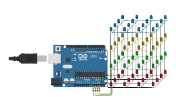

MATERIALES
Vamos a utilizar en este proyecto los siguientes materiales:
- LEDS
- Cautín
- Estaño
- Cera para el Cautín
- Placa Arduino UNO
- Base de Pléibo de madera (plywood)
- Cables Jumpers
- Cable sólido
- Cable de cobre
- Regla
- Lápiz
- Base de cartón para soldar
Vamos a utilizar en este proyecto los siguientes materiales:
PASOS
1. Una vez elaborado en Tinkercad, probar su funcionamiento.
2. Dibujar una base de cartón un cuadrado de 3x3 con medida de 2 centímetros por lado, para mayor precisión al momento de soldar.
 3. Con el Cautín y el estaño soldar cada parte del led según corresponda.
3. Con el Cautín y el estaño soldar cada parte del led según corresponda.
 4. Continuar soldando los demás pisos del Proyecto, cubo LED.
4. Continuar soldando los demás pisos del Proyecto, cubo LED.

5. Vídeo Funcionando.
Obra publicada con Licencia Creative Commons Reconocimiento Compartir igual 4.0